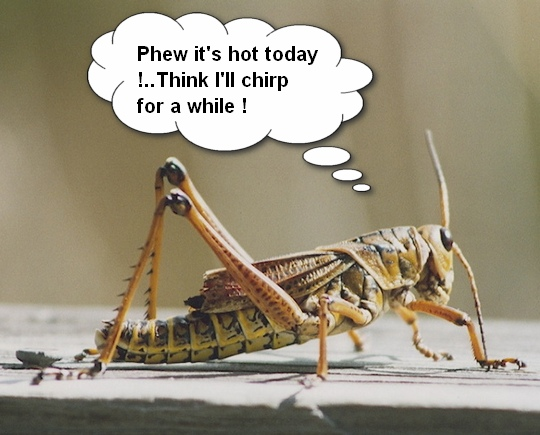
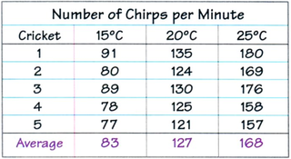
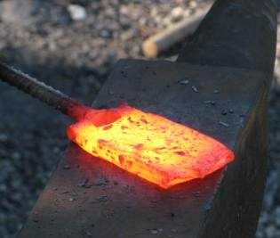
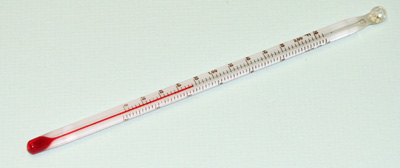
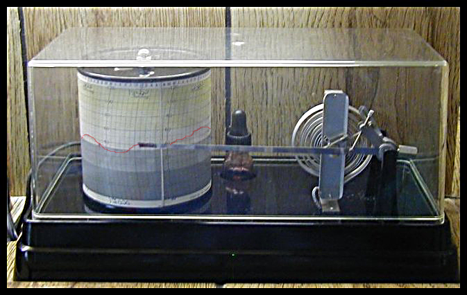
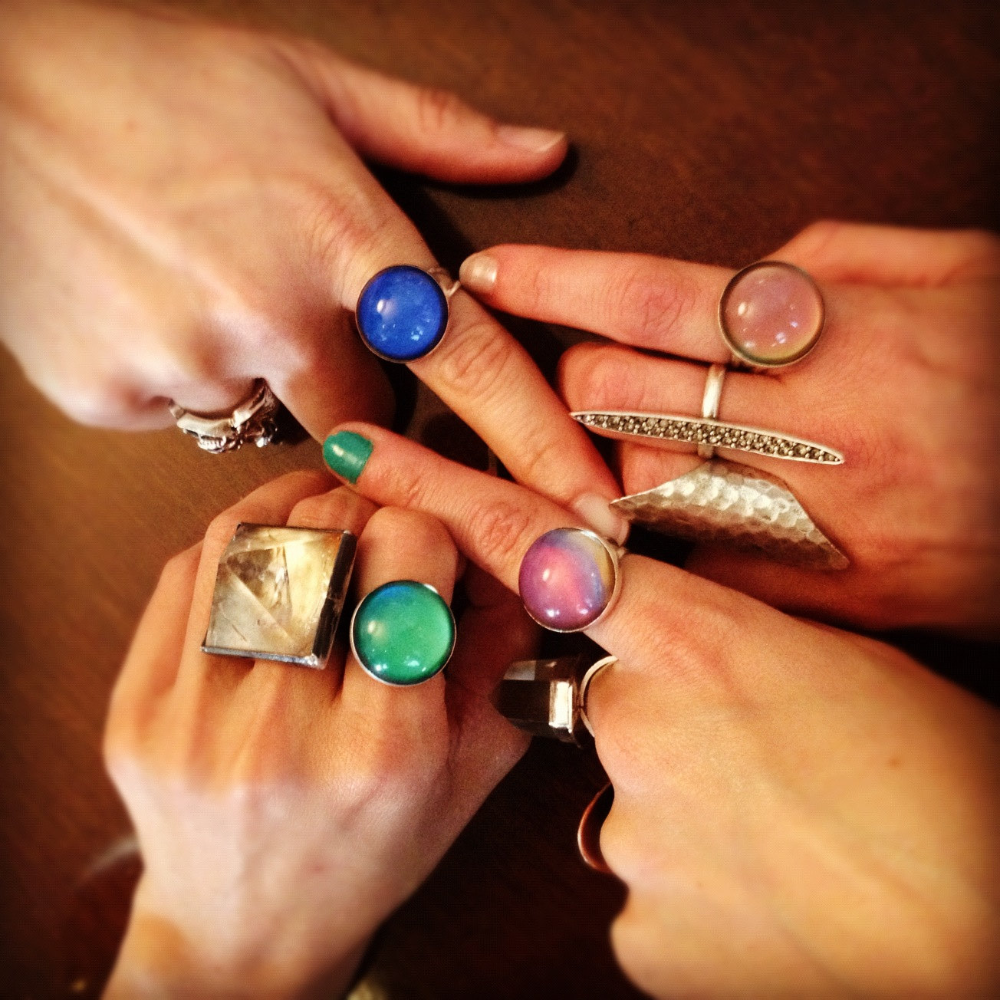
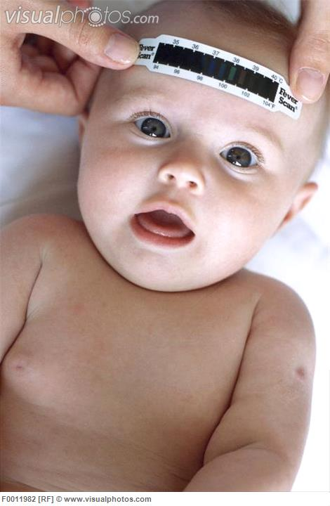
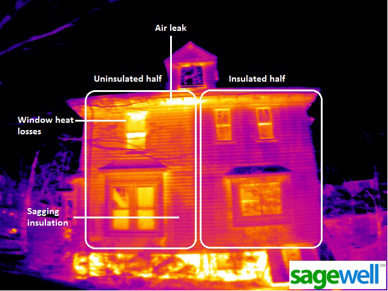
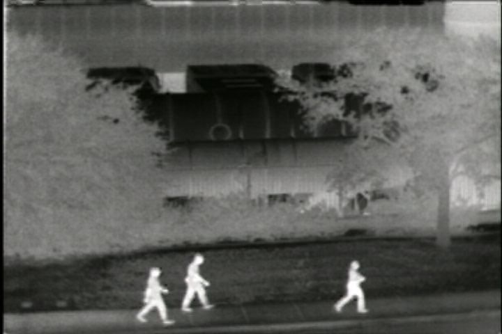

layout: false
class: center, middle, inverse
# Topic 2: Measuring Temperature
## Unit: Heat and Temperature
### www.drpineda.ca
---
name: base
layout: true
---
# What is temperature?
##Basic definition:
- How hot or cold something is
## Grade 7 level definition:
- The average kinetic energy of all the particles in the material
---
# Estimating Temperature
## How?
- By touch: nerve endings in the skin are quite sensitive to temperature
- By sight: some materials appear to be a different colour at certain temperatures, e.g. welders (steel), glass blowers, astronauts (stars)
- By ear: the rate at which cricket chirp depends on the temperature
## When?
---
# Using Crickets to Estimate Temperature


## Dr. Pineda's Tip: Great Science Fair project!
---
layout: false
class: center, middle
# How Reliable is this though?
## Let’s do a demo to find out!!
---
# Thermometers
- More reliable than by touch or sight (and safer too)
- Thermometer: mechanical or electrical devices for measuring temperature
- “therm” – heat “meter” - measure
---
# The First Thermometer
- Many thermometers were invented over the centuries
- The first modern thermometer was invented by Galileo around 1600.
- open air thermometer based on air expansion principle
- 1700: A new design
- liquid thermometer based on liquid expansion principle
---
# Sidebar: qualitative vs. quantitative measurements
Qualitative measurements: description, observations. For example;
- hot, warm, cold, red, white
- temperature estimation by sight and touch
Quantitative measurements: numerical. For example;
- 15 degrees Celsius, 0, 23°C
- temperature taken by thermometer

---
# Lab thermometers
Liquid in glass
Four parts:
1. bulb : at base, holds liquid
1. stem: thin tube in which liquid rises
1. scale: use to read liquid level; unit of measurement
1. bore – hollow tube inside the stem where the liquid rises/falls. Liquid: coloured alcohol. Why use alcohol?

---
# Calibrating thermometers
Calibrate: to set a device to zero and ensure accuracy before use
Steps of thermometer calibration:
1. Immerse thermometer in crushed ice and water; label liquid level as 0.
2. Immerse thermometer in boiling water; label liquid level as 100.
3. Mark 100 equal divisions between the 2 labeled levels
---
# Celcius Scale
Developed by Anders Celsius (1701-1744)
- Based the standards of comparison on properties of pure water at sea level
- Assigned value of 100°C to boiling water
- Assigned value of 0°C to temperature that ice melts
At sea level, no impurities
---
# It's Too Much Pressure
Pressure affects the freezing point (also called the melting point)
- Extremely high pressure causes ice to flow or melt below 0°C, e.g. glaciers, under a skate blade.
- Under low pressure, water will boil below 100°C, e.g. at Mt. Everest water boils at 69°C.
---
# Kelvin Scale
- Developed by William Thompson or Lord Kelvin (1824-1907)
- Scientist who studied behaviour of gas
- Developed to measure coldest possible temperatures called absolute zero
- Absolute zero: estimated to be -273.15°C = 0 K and 0°C =273.15 K
- 0 K as never been reached. This is where all particle motion stops.
- Same increments as Celsius scale i.e every 1°C = 1 K
## What does 100°C equal in K?
---
# The Strange World of Absolute Zero Kelvin
- Can never be reached because particles always "jitter"
- New states of matter can arise when very close to zero (Bose-Einstein Condensate)
---
# Farenheit Scale
- Named after Daniel Fahrenheit (1686-1736)
- Used in Canada until 1970’s, still used in USA
- °C to °F : $\mbox{°C} \times 1.8 + 32 = \mbox{°F}$
- °F to °C : $\mbox{°F} - 32 / 1.8 = \mbox{°C}$
## What does 100°C equal in Farenheit?
---
# I'm Melting... or Freezing
- Melting point of water is?
- Impurities can lower the melting point, e.g.
- Salt on the road and antifreeze.
- Ocean water freezes below 0°C due to salt!
“Cold blooded” organisms (ectotherms) have dissolved substances in blood to keep blood from freezing, e.g. snakes, frogs
---
# Boiling Point
- Boiling point of water is?
- Pressure can change boiling point of substances, e.g.
- Pressure cooker traps steam increasing the boiling point of water; food cooks faster
- Lower pressure at higher altitudes lowers the boiling point and results in slower cooking times
---
# Different Measuring Devices: Thermocouple
Two different metals twisted together that generate a current when heated.
- Two wires; different metals
- As wires are heated, an electric current is generated
- The hotter the temperature, the greater the flow of electricity
- Probes are connected to a computer to determine temperature
- Used for high temperature materials
---
# Different Measuring Devices: Bimetallic strips
Strip of metal and copper fused together.
- End attached to a pointer which indicates temperature
- Example:
- Thermostat. When temperature drops, strip contracts and completes an electrical circuit turning on the furnace
- Recording thermometer

---
# Mood rings and strip thermometers


---
# Different Measuring Devices: Infrared Thermogram
- Thermal imaging cameras
- A special photograph that shows the temperature of an object
- Range of colours indicate hot and cold temperatures
- Used by firefighters, law enforcement, military, aerial photographs, forest fires, construction


---
# Review
1. How does a bimetallic strip work?
1. List 5 uses of an Infrared Thermograph
1. Complete page 198 – match the description with the correct temperature and place them in three columns as instructed